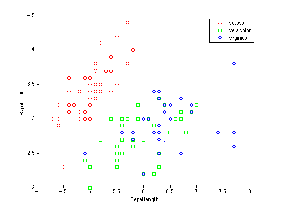
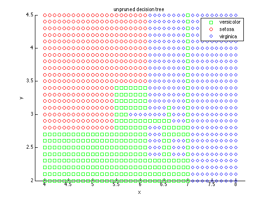
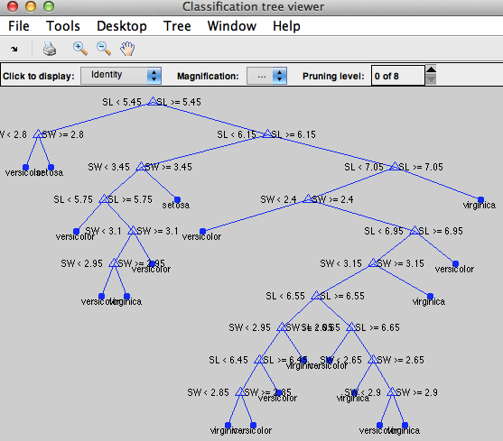
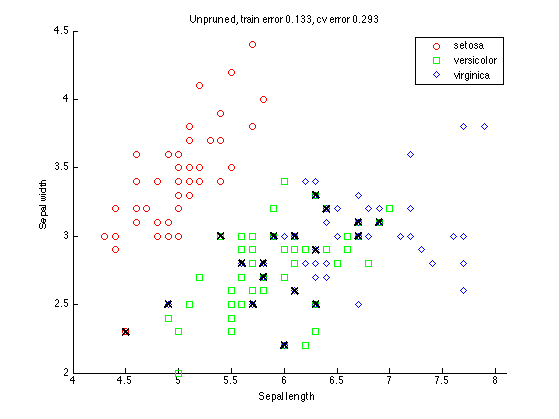
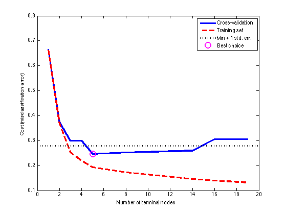
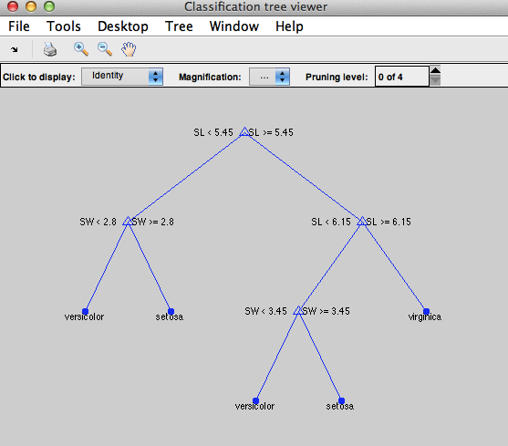
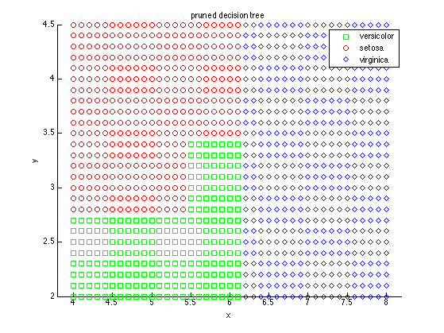
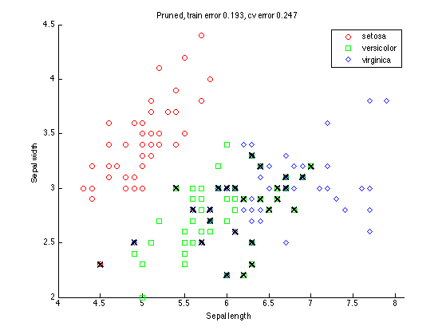

requireStatsToolbox
load fisheriris
N = size(meas,1);
figure
gscatter(meas(:,1), meas(:,2), species,'rgb','osd');
xlabel('Sepal length');
ylabel('Sepal width');
printPmtkFigure('dtreeIrisData')
s = RandStream('mt19937ar','seed',0);
RandStream.setDefaultStream(s);
cp = cvpartition(species,'k',10);
t = classregtree(meas(:,1:2), species,'names',{'SL' 'SW' });
figure
[x,y] = meshgrid(4:.1:8,2:.1:4.5);
x = x(:);
y = y(:);
[grpname,node] = t.eval([x y]);
gscatter(x,y,grpname,'grb','sod')
title('unpruned decision tree')
printPmtkFigure('dtreeDboundaryUnpruned')
view(t)
dtclass = t.eval(meas(:,1:2));
bad = ~strcmp(dtclass,species);
dtResubErr = sum(bad) / N
dtClassFun = @(xtrain,ytrain,xtest)(eval(classregtree(xtrain,ytrain),xtest));
dtCVErr = crossval('mcr',meas(:,1:2),species, ...
'predfun', dtClassFun,'partition',cp)
figure;
gscatter(meas(:,1), meas(:,2), species,'rgb','osd');
xlabel('Sepal length');
ylabel('Sepal width');
hold on;
plot(meas(bad,1), meas(bad,2), 'kx', 'markersize', 10, 'linewidth', 2);
title(sprintf('Unpruned, train error %5.3f, cv error %5.3f', dtResubErr, dtCVErr))
printPmtkFigure('dtreeDataUnpruned')
figure;
resubcost = test(t,'resub');
[cost,secost,ntermnodes,bestlevel] = test(t,'cross',meas(:,1:2),species);
plot(ntermnodes,cost,'b-', ntermnodes,resubcost,'r--','linewidth',3)
figure(gcf);
xlabel('Number of terminal nodes');
ylabel('Cost (misclassification error)')
[mincost,minloc] = min(cost);
cutoff = mincost + secost(minloc);
hold on
plot([0 20], [cutoff cutoff], 'k:', 'linewidth', 3)
plot(ntermnodes(bestlevel+1), cost(bestlevel+1), 'mo', 'markersize', 12, 'linewidth', 2)
legend('Cross-validation','Training set','Min + 1 std. err.','Best choice')
printPmtkFigure('dtreeErrorVsDepth')
pt = prune(t,bestlevel);
dtResubErr = resubcost(bestlevel+1)
dtCVErr = cost(bestlevel+1)
dtclass = pt.eval(meas(:,1:2));
bad = ~strcmp(dtclass,species);
dtResubErr2 = sum(bad) / N
view(pt)
figure
[grpname,node] = pt.eval([x y]);
gscatter(x,y,grpname,'grb','sod')
title('pruned decision tree')
printPmtkFigure('dtreeDboundaryPruned')
figure;
gscatter(meas(:,1), meas(:,2), species,'rgb','osd');
xlabel('Sepal length');
ylabel('Sepal width');
hold on;
plot(meas(bad,1), meas(bad,2), 'kx', 'markersize', 10, 'linewidth', 2);
title(sprintf('Pruned, train error %5.3f, cv error %5.3f', dtResubErr, dtCVErr))
printPmtkFigure('dtreeDataPruned')
dtResubErr =
0.1333
dtCVErr =
0.2933
dtResubErr =
0.1933
dtCVErr =
0.2467
dtResubErr2 =
0.1933
       